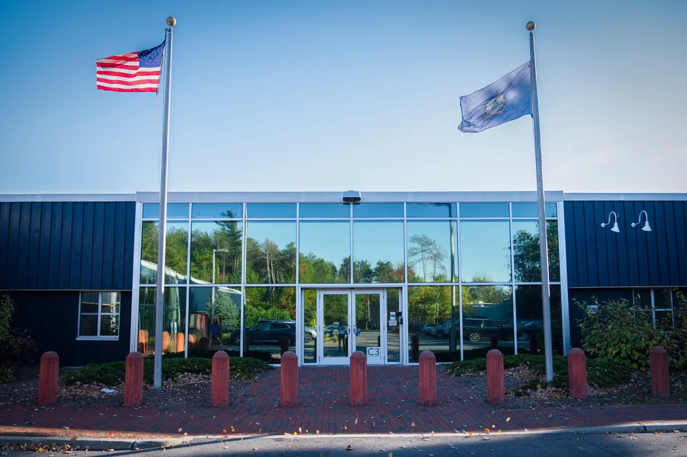
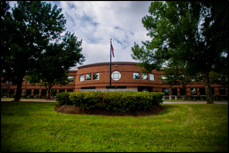
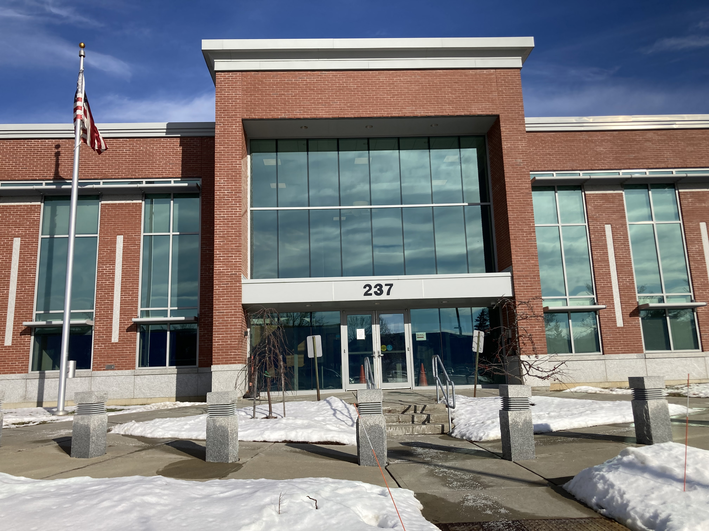
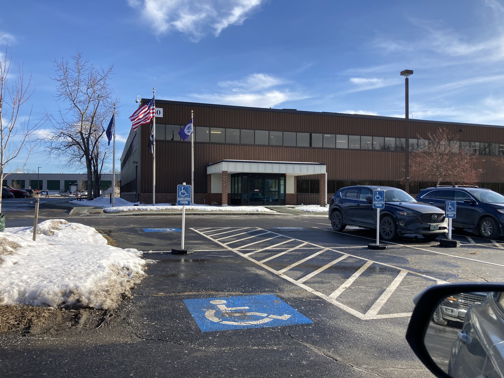
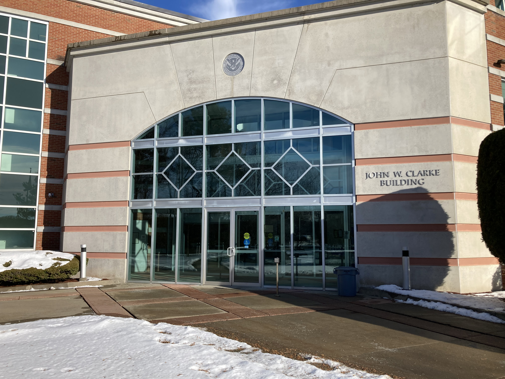
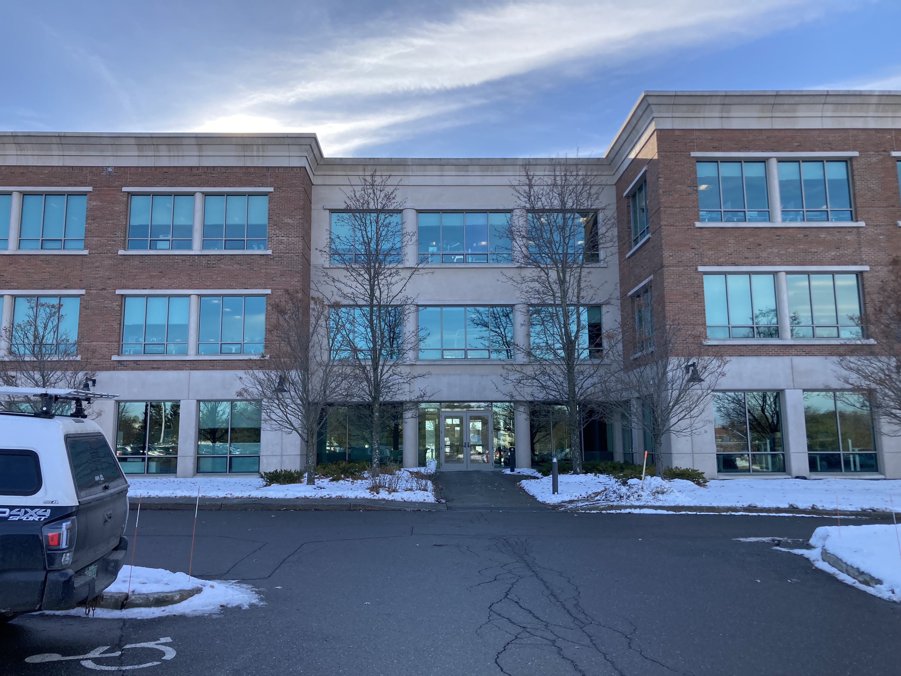
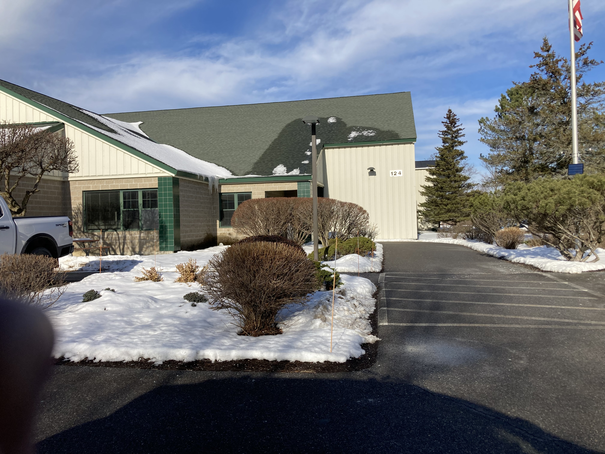
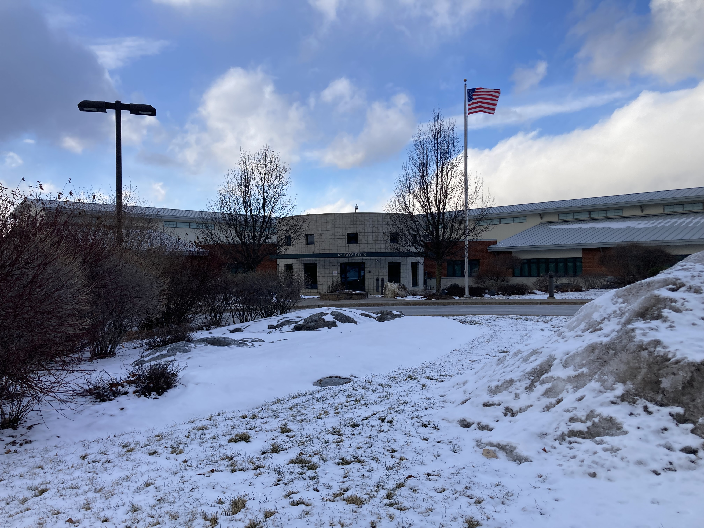

About ICE/DHS in Vermont
Starting in 1991, the Immigration and Naturalization Service began locating many national operations in Northern Vermont. Patrick Leahy, the long-time Vermont Senator, brought these operations here saying, “Why not have it in Vermont?” Now, there are at least 8 national DHS/ICE facilities in Chittenden County, Vermont alone.
Learn more about each of these facilities below.
ICE National Criminal Analysis and Targeting Center (NCATC)
426 Industrial Avenue, Williston, VT

- This facility surveils the public to identify targets for ICE arrests. They also surveil “family members, friends, or co-workers” of potential targets.
- This facility then sends out “targeting orders” to 25 field offices across the country. Therefore, many of the ICE actions you see in the news are directed from this facility.
- ICE plans to add 12 workers here soon, who will expand ICE’s ability to surveil social media, including searching for “negative sentiment” towards ICE.
- This facility will also likely use a software called Graphite, which can hack into a user’s cell phone without the target ever knowing. Impressive huh?
ICE Law Enforcement Support Center (LESC)
188 Harvest Lane, Williston, VT

- This facility houses ICE’s National Tip Line. So call in a tip now… you will be supporting the local economy.
- This facility not only responds to tips, but it also performs “proactive targeting” of individuals, just like the NCATC at 426 Industrial Avenue.
- ICE’s central database of information on 340,000 targets for arrest is housed here as well.
- ICE is in the process of adding 100 new employees at this location, so submit your application now!
DHS “Training Center”???
237 Harvest Lane, Williston, VT

- Just across the street from the LESC is a DHS site that may be a training center for USCIS employees.
- There is no mention of this site, however, on the DHS website.
- A recent news article about graffiti at this site described it just as a DHS location.
- Mapquest lists this location as a USCIS “Training Center”. (Hey someone still uses Mapquest!)
US Citizenship and Immigration Service (USCIS) Northeast Service Center
38 River Road, Essex Junction

- This center processes immigration applications.
- This facility is huge, operating in 115,000 square feet, with an estimated 200 employees.
- This was the first national immigration operation brought to Vermont. It opened in St. Albans in 1991. Happy 35th anniversary!
USCIS Human Resource Operations Center (HROC)
70 Kimball Avenue, South Burlington

- This facility performs all payroll, benefit, and other Human Resources functions for the 20,000+ USCIS employees nationwide.
- Visit this facility to learn about the great benefit packages offered by the Department of Homeland Security.
DHS “Mystery Site”
124 Technology Park Way, South Burlington

- There are over 150 DHS employees here, but that is all that is known about this location.
- The building is unmarked, and there are no references to it on the DHS website.
- The activities at this location are so secretive that even the City of South Burlington doesn’t know what operation is housed here.
- Security is so strict that even lunch deliveries are not allowed. It doesn’t get any spookier than this, folks!
USCIS/DHS Administrative and Delivery Facility
124 Leroy Drive, Williston

- DHS lists many different USCIS administrative functions managed from this site.
- It also serves as a delivery processing facility for other DHS sites in the area.
- If you mail something to DHS in Chittenden County, it probably comes here!
DHS USCIS Office of Security Integrity
65 Bowdoin Street, South Burlington

- Agents at this facility investigate possible cases of internal USCIS fraud, waste, abuse, and other forms of misconduct.
- It must be pretty quiet here, as there is no reason to believe that DHS employees would break the law.